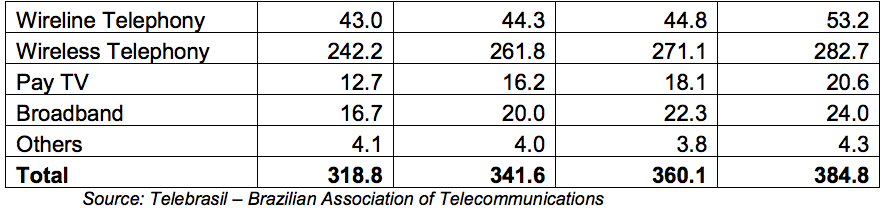

Telecommunications
Overview
Return to top
With approximately a third of the region’s population, Brazil is Latin America’s largest telecommunications market. The Brazilian telecom services market reached US$99 billion, up 6.3% versus the previous year. By 2017, the market is forecasted to reach US$120 billion.
Regulatory and legislative adjustments have been and will continue to be essential to sustained growth in the telecommunications sector. The approval of a new framework that allows telecommunications companies to offer cable and internet protocol television services is already reducing prices, accelerating adoption and increasing competition. Likewise, the National Government Broadband Plan is already spurring the expansion of broadband services throughout Brazil. However, high taxes are a persistent problem in hindering growth.
As for manufactured equipment, the market reached US$11.6 billion and industry expects 4% growth in 2014. Nearly all of the world's largest telecom OEMs have plants in Brazil, and most of them have global supply chains for items like components, instrumentation, processing and telecommunications equipment. Cutting edge technologies and solutions have demonstrated viable market opportunities.
The 2014 World Cup and 2016 Olympics assure that Brazil will continue to receive global attention. “4G” has already been launched, although the infrastructure needs improvement to raise the quality of services. The uptake of services, however, will begin gradually, with low initial adoption hampered by the high cost of devices.


Sub-Sector Best Prospects
Return to top
Cellular Phone Services: 2013 represented a milestone year for the Brazilian mobile market, when it reached a density of more than 135 lines per 100 inhabitants. It was a year of transition, as well, with the voice market reaching maturity and operators increasing their focus on mobile broadband, which grew 48% in 2013. In the near future, mobile operators will not be able to count on the growth of their cellular base to leverage an increase in revenues. Voice revenues are likely to drop, pressured by decreases in the prices charged for on- net calls and by a drop in interconnection revenue determined by the Brazilian regulatory agency Anatel.
Considering this scenario, operators will continue to focus on data services to stimulate smartphone sales and expand their 3G and 4G networks. While GSM represents more than 55% of mobile lines, migration from GSM handsets to 3G will accelerate through 2014. Nevertheless, 3G handsets are not likely to overtake GSM devices until 2015. Competition may become stronger due to the introduction of Nextel’s 3G operations, whose biggest growth comes from the postpaid segment, which in 2013 increased at a faster rate than prepaid. Some new players like Virgin Mobile have just begun mobile virtual network operator services (MVNO) in Brazil, which could then entice other companies to enter the market and help to establish the MVNO market. However, the current market share ranking of the cellular operators is expected to remain the same with Vivo likely to keep its leadership, followed by TIM, Claro and Oi.
Wireline Market: For the fixed services market, which includes fixed telephony, broadband and Pay-TV services, the focus will be on increasing investments in Fiber-to-the- Home (FTTX)-based fixed broadband networks. Fixed broadband grew 12% in 2013 and is expected to continue growing at an annual rate of 10%. Pay-TV, which increased 16.8% in 2013 due to Direct-to-Home TV, is likely to keep this growth rate in 2014, together with large growth expected for cable TV and Internet Protocol TV services.
Broadband/Satellite: With a promising economic outlook and rising prosperity, demand for broadband in Brazil continues to soar. Broadband operators have been struggling to meet the growing demand, which has led to system overload problems. The Government of Brazil (GOB) has been drafting plans to spread broadband across the country in one of the world's largest infrastructure projects. Two major factors have inhibited the growth of broadband in Brazil: shortage of fixed-line infrastructure and broadband prices, which are too high for the Brazilian socio-economic environment. On the other hand, the growth of mobile broadband in Brazil is increasing at a rate of 12% this year. The largest wireless telecom carriers (with parent companies in parentheses) and respective market share are shown below:
Vivo (Telefônica) 28.6%
Tim (Telecom Itália) 27.0%
Claro (América Movil) 25.1%
Oi (Private Brazilian Funds & Portugal Telecom) 18.5%
In 2013, Brazil decided to form its own satellite company to provide a civil-military satellite communications system and to lay the groundwork for assuring Brazil’s future satellite autonomy. The GOB founded Visiona Tecnologia Espacial, a company jointly owned by Embraer (51%) and Telebras (49%). The initial objective is the integration of the government’s Defense and Strategic Communications Geostationary Satellite (SGDC) system, which addresses the satellite communications needs of the federal government. This includes the National Broadband Program (PNBL) and a broad spectrum of strategic and defense communications. The SGDC will also signal Brazil’s entry into the high-throughput satellite market, as it will carry 50 Ka-band transponders with an aggregate 80 gigabits per second of throughput capacity. Brazil’s Ministry of Communications will use this satellite to extend Internet access throughout the country.
Media: Free-on-the-air broadcast (non-cable) television companies are subject to a regulation that requires 80% of their programming content to be of Brazilian origin. Foreign cable and satellite television programmers are subject to an 11% remittance tax; however, the tax can be avoided if the programmer invests 3% of its remittances in co-production of Brazilian audio-visual services. President Rousseff signed a new law in September 2011 encompassing the subscription television market, including satellite and cable TV. Under the new law, telecom companies will now be allowed to offer television packages with their service. The law also removed the previous 49% limit on foreign ownership of cable TV companies.
Opportunities
Return to top
The use of social media is exploding in Brazil. It is the third largest market for Facebook, the fifth for Twitter, and first for LinkedIn with 6 million professional users. The Brazilian mobile consumer is eager to play games and use apps. Apple opened its first store in Rio de Janeiro at the end of 2013 and intends to open more stores in the largest cities of Brazil. The Apple App Store is already popular in Brazil; its year-on-year revenue growth outpaced that of the U.S. App Store. Brazilian app sales grew 83% in the last year, vs. 44% growth in the U.S. Brazil ranks sixth worldwide for App Store revenue growth.
Data cost prices are dropping in Brazil, as carriers offer competitive pricing plans. With prepaid plans as the most popular model, the major carriers are offering data plans from 20 to 25 cents per day. Some carriers are even offering no-charge access to data-heavy services like mobile video streaming. Thanks to government support in the form of auctions that encourage telecom carriers to purchase 4G bandwidth at competitive prices, Brazil is laying the groundwork for widespread 4G access. All four of Brazil’s major telecom companies obtained licenses for 4G high-speed Internet capabilities in the recent auction. Over the long run, these telecoms companies are expected to offer 4G in all Brazilian cities with a population of 100,000 or more by the end of 2016.
Brazil is developing the conditions to have a dominant mobile market: the government is supporting new initiatives, important OEMs have plants in the country, and the consumer base is massive. As its place in the global mobile market matures over the next few years, developers, entrepreneurs and investors would be wise to obtain a stake in this mobile frontier before the competitive landscape becomes saturated.
Web Resources
Return to top
Trade Events:
- SET EXPO Convention and Trade Show
August 24-27, São Paulo
- Futurecom International Congress and Trade Show
October 13-16, São Paulo
Websites:
Government of Brazil:
- ABINEE Brazilian Electrical and Electronics Industry Association http://www.abinee.org.br
- ANATEL Brazilian Telecommunications Agency http://www.anatel.gov.br
- Telebrasil Brazilian Association of Telecommunications http://www.telebrasil.org.br
For more information about export opportunities in this sector, please contact Industry Specialist Ebe Raso: ebe.raso@trade.gov